1 Build a Shopper Agent with Shopper Agent Setup
You'll stand up a working B2C Commerce shopper agent from a single guided form. Point it at the Northern Trail Outfitters (NTO) storefront, click Create Agent, and Shopper Agent Setup generates the agent, its subagents, and an Embedded Service deployment for you. At the end you copy a small connection snippet — that's all Section 2 needs to bring the agent to life on a web page.
Prerequisite: a Salesforce trial org. Grab one from orgfarm.salesforce.com/signup using the Event Code below (available for one week).
RLYXNZ7B
1.1 Open Commerce Shopper Agent Setup
First login? Dismiss the “Canvas - Q_Passport” error that appears when you initially log in — it's harmless and won't affect the workshop.
Using the Setup gear icon in the top-right navigation area, click Setup in the drop-down menu. When the Setup window appears, use the Quick Find box (left navigation area) to search for Commerce Shopper Agent Setup, then open it (under Feature Settings → Commerce).
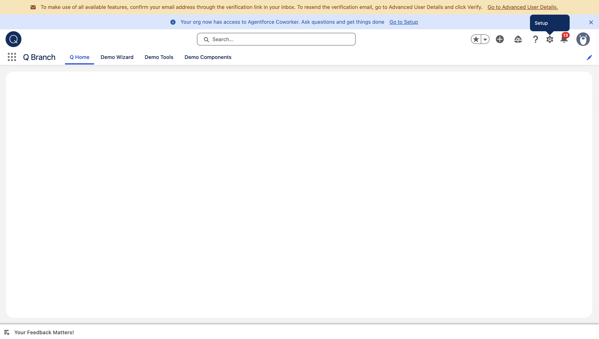
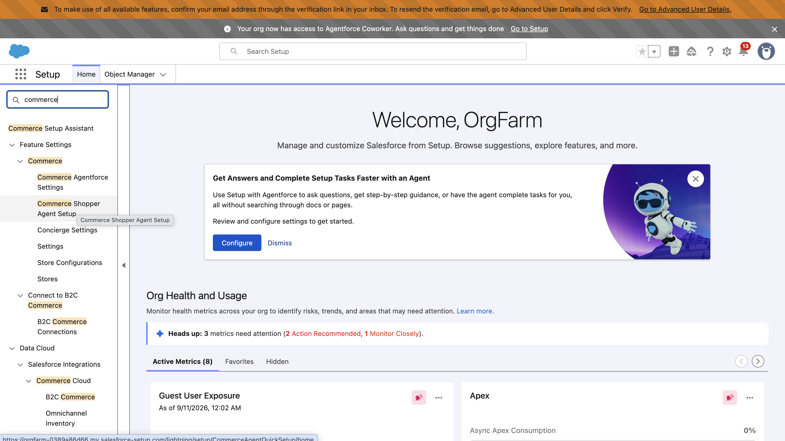
1.2 Fill in the agent details
The form opens with placeholder examples. Northern Trail Outfitters is a demo storefront that sells outdoor apparel — use these instance details. Pick your org below and use the Copy button on each field to paste it straight into the Setup form.
| Agent Details | |
|---|---|
| Agent Type | Agent Script (Enhanced Search) |
| Agent User | Create a new user |
| Agent Name | NTO Shopper Agent |
| Company | Northern Trail Outfitters |
| Salesforce Commerce Cloud (B2C) | |
| Storefront Type | SFRA |
| B2C Org ID | f_ecom_zzsa_014 |
| Site ID | nto |
| Storefront URL | https://zzsa-014.my.commercecloud.salesforce.com/s/nto/en_US/home |
| Locale | en-US |
| CDN Hostname | https://s3.amazonaws.com |
| SLAS (Shopper Login & API Access) | |
| Commerce API URL | https://kv7kzm78.api.commercecloud.salesforce.com |
| SLAS Client ID | 80c58f7c-9b04-4b2b-9959-835ab279ed4c |
| SLAS Client Secret | dDCKHl-B3DxdmPvlmDrJYi027mc1OFmcYL_JpkjS1gI |
The SLAS Client Secret above is for this event only and will be rotated afterward.
The SLAS Client Secret is masked (both here and in the Setup form). Click Show before Copy — otherwise you'll copy a string of asterisks and the agent won't connect.
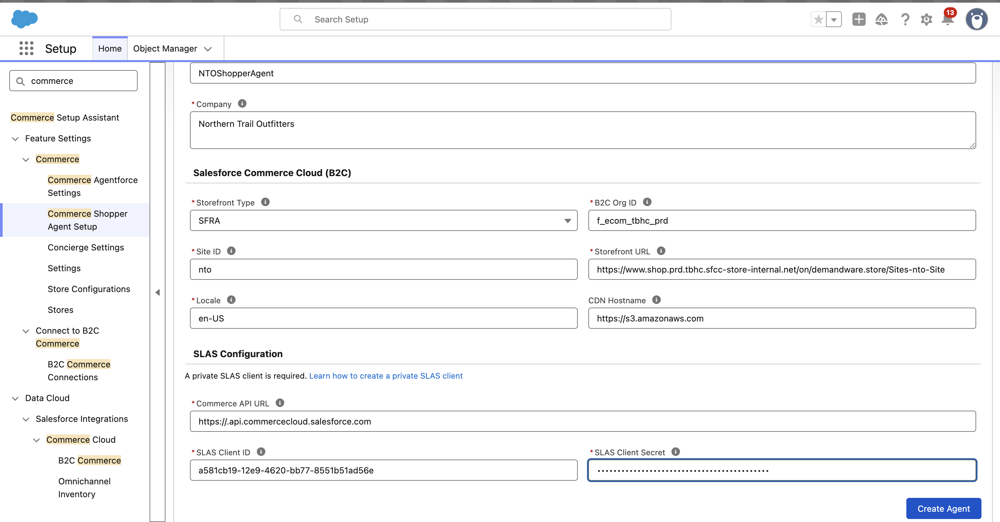
1.3 Create the agent
Click Create Agent. You'll get a Success toast — the agent build runs in the background and finishes in 2 to 5 mins (you'll get an in-app notification).
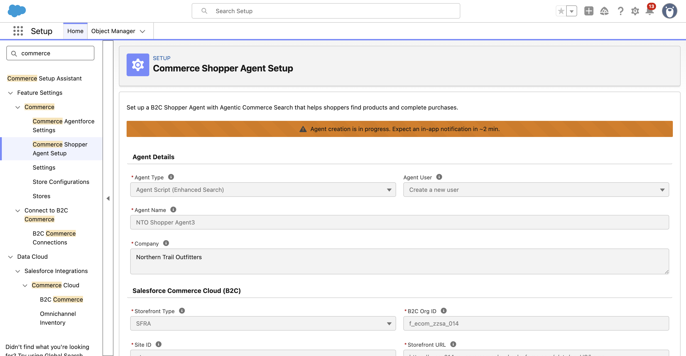
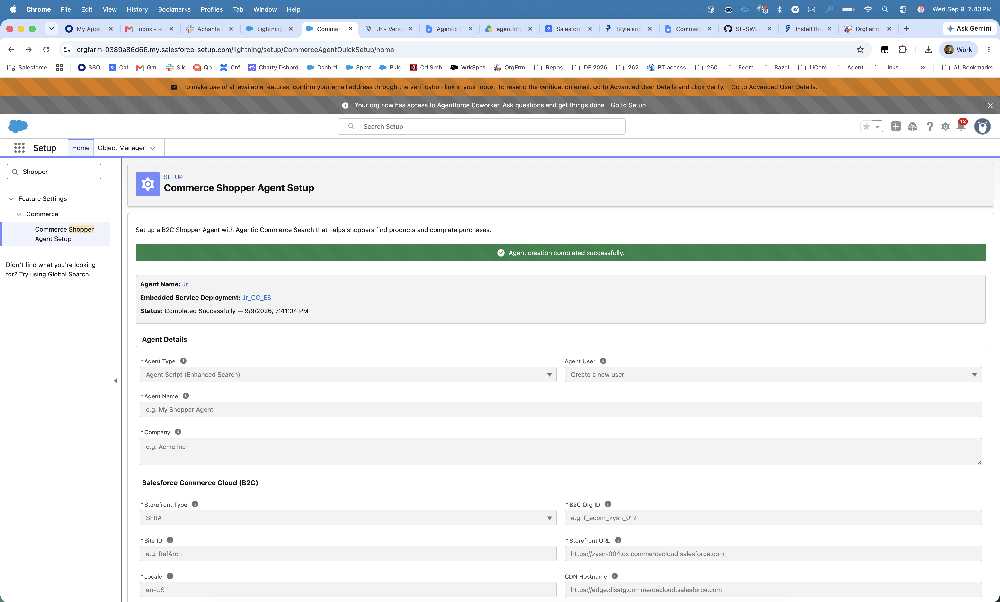
1.4 Get the connection snippet
Setup already created the Embedded Service deployment for you — you don't build one. In the Shopper Agent Setup UI, click the Embedded Service Deployment link that appears just below the green-shaded “Agent creation completed successfully” message. (It's easy to miss — look directly under the green banner.) If you've navigated away, you can also reach it via Quick Find embedded → Embedded Service Deployments, opening the one named after your agent, e.g. NTO_Shopper_Agent_ES_Custom. On the deployment page, click Install Code Snippet → Get Code, then Copy to Clipboard.
These values are unique to your org and deployment — copy your own; don't reuse the example above.
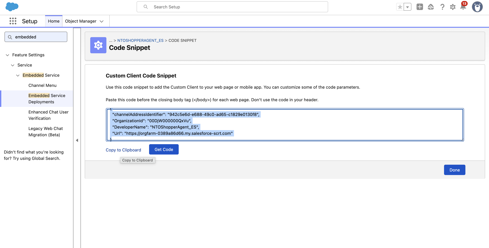
✅ You now have a working Shopper Agent and the connection details to deploy it.
↑ Back to contents2 Configure & test the agent on a standalone page
You don't need a storefront to try the agent. This demo playground is a single static page that loads the Cimulate chat widget and connects to your agent using the connection JSON you copied in Section 1. Paste, connect, and chat.
2.1 Open the demo playground
Open bhagathganga.github.io/shopper-agent-workshop-demo in a new tab (right-click → Open in new tab) so you can keep this guide open alongside it. You'll see a config form. (If you don't, click the Settings button in the top-right.)
At the top of the page there's a Workshop / Playground toggle. Workshop is this step-by-step guide; Playground is the live demo page where you paste your connection JSON and chat with your agent. For this step, switch to Playground.
2.2 Paste your connection JSON
Paste the connection JSON from Step 1.4 into the config box and click Fill fields from JSON — the SCRT2 URL, Organization ID, and ES Developer Name fill in automatically. Give it a chat header label (for example, NTO Shopper Agent).
{
"channelAddressIdentifier": "866ca16e-f5c9-49f5-b2b5-250c5f4a34ee",
"OrganizationId": "00DWt00000KCYnB",
"DeveloperName": "NTO_Shopper_Agent_ES_Custom",
"Url": "https://storm-b76c200d4b76c7.my.salesforce-scrt.com"
}
Everything is stored only in your browser. Use your own org's values, not the example above.
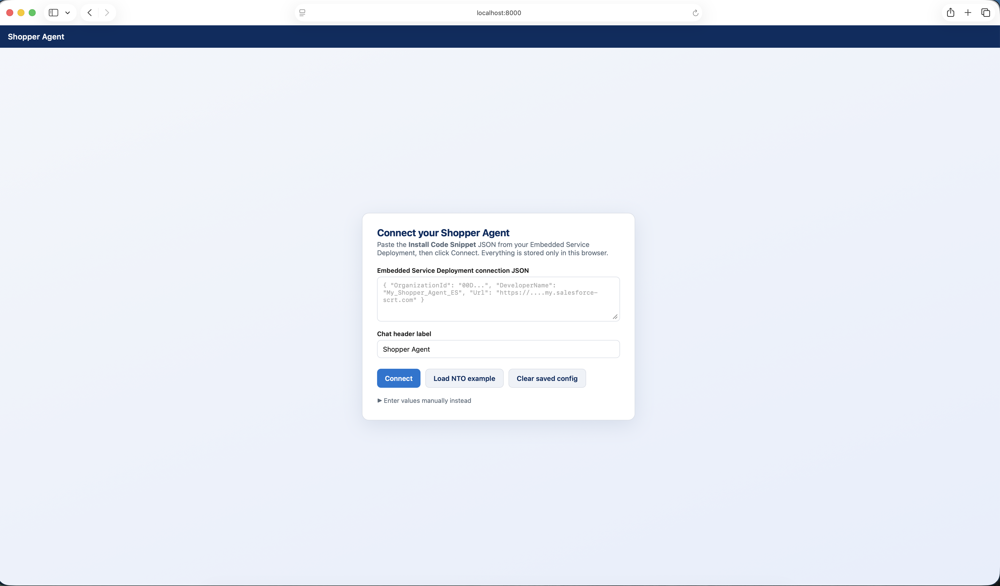
2.3 Connect and chat
With the JSON pasted and a chat header label set, click Connect. The widget loads and the agent greets you with its welcome message.
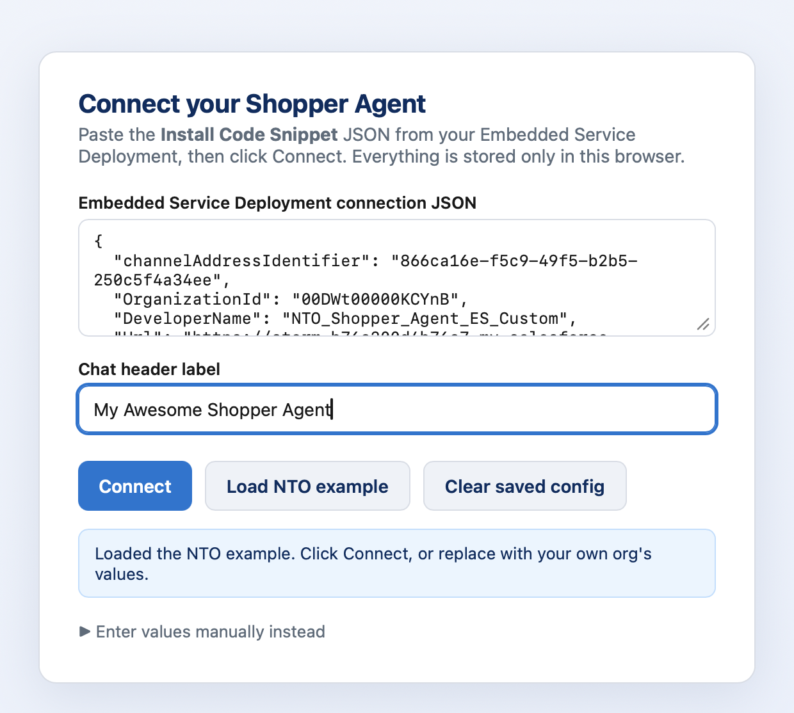
Now play around. Use the expand icon in the top-right of the chat window to move the chat to the center of the screen for a bigger view. Then try a natural request like “training for a marathon, what should I buy” — the agent searches the NTO catalog and returns real products (running shoes, hydration gear) as a browsable carousel with names and prices.
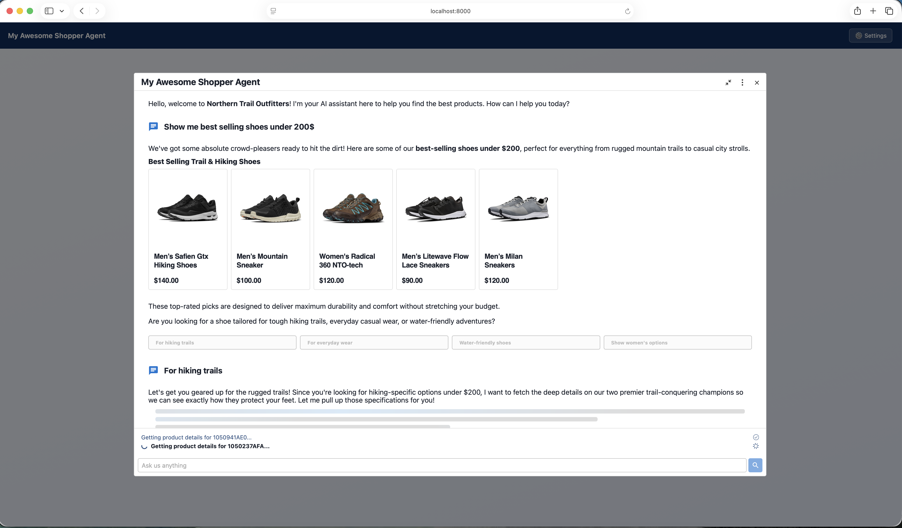
✅ You have a working Shopper Agent you can drop into any storefront.
↑ Back to contents3 Make the agent your own
Personalize the agent script. Change one thing at a time and re-test in your demo app to see the effect.
3.1 Welcome message
The first line the agent says. Find welcome (under system → messages) and swap in your own name:
Hi, I'm Ava — your personal shopping assistant. What are you looking for today?
3.2 Retailer voice
Describe how your agent should sound. This shapes every reply. Find retailer_voice and write your own, for example:
Warm, upbeat concierge. Short, friendly replies. Plain language, at most one emoji, never pushy.
3.3 Add a shoe finder
Let's customize the agent to add a shoe finder: when a shopper wants footwear, the agent asks for their gender and size, shows the sizes as tappable pills, then searches only in that size — and if that turns up little, it broadens to similar products while staying in that size, never substituting another. This takes two edits — one to guide the search, one to build the pills.
Two terms used below:
- Pill — a small, rounded, tappable button (a “chip”) the agent shows under its message as a quick reply, so the shopper taps it instead of typing. The Script / Document badges in Section 4 are the same rounded shape. You'll see real pills when you test at the end of this step (and on the welcome screen from Step 2.3).
- Ladder — the full, ordered list of sizes for one group (e.g. the women's ladder runs 5 → 11). “Rendering the ladder” means turning every rung into its own pill so the shopper taps their size rather than typing it.
Keep each rule string under 255 characters. Agent Builder rejects the commit if any single variable value string exceeds that limit — and sf agent validate won't catch it.
a) Guide the search — tool_calling_guidance
Add these rules to the tool_calling_guidance list so the agent asks for gender and size, then searches in that size:
"SHOE PREREQUISITE: If the product is footwear, both GENDER and SIZE are required before searching. If both are missing, ask for GENDER FIRST, then size.", "SIZE SEARCHING: Pass the size via refinementConstraints as c_size (e.g., c_size=10.5). Do NOT pass c_gender — the userQuery handles gender.", "SAME-SIZE SEARCH: Once the shopper gives a shoe size, include that c_size on every FOOTWEAR search for the rest of the session. Never run a footwear search that drops c_size. Do NOT apply c_size to apparel — clothing uses letter sizes (S/M/L).", "SAME-SIZE SIMILAR FALLBACK: If the exact query returns few/no results in that size, broaden the userQuery to SIMILAR products (same category/brand/style) while KEEPING c_size. Only show products available in that size; never substitute other sizes."

Why c_size? In B2C Commerce, the c_ prefix marks a custom attribute — one the retailer defined on their catalog, as opposed to a Salesforce standard field. NTO stores shoe size in a custom attribute named size, so at the API it's c_size. The name must match the attribute's ID in your catalog exactly — on another storefront it might be c_shoeSize or similar, so check your catalog's attribute definitions before reusing this rule. (Standard attributes like price or brand have no c_ prefix.)
b) Build the size pills — response_guidance
Add these rules to the response_guidance list. Each size in a ladder becomes one tappable pill. (Sizes verified available in the NTO catalog.)
"SHOPPER'S VOICE: Phrase every pill in the shopper's own words (e.g. 'Show me black ones', 'Under $150').", "GENDER PILLS: When asking who the shoes are for, output these three pills: Men's, Women's, Kids.", "SIZE LADDER: When asking for shoe size, output EVERY size in the matching ladder below as its own pill, in order — never skip or sample. Use WOMENS (women's), MENS (men's), or KIDS (child), and always end with 'I wear a different size'.", "WOMENS LADDER: Size 5, Size 5.5, Size 6, Size 6.5, Size 7, Size 7.5, Size 8, Size 8.5, Size 9, Size 9.5, Size 10, Size 10.5, Size 11", "MENS LADDER: Size 7, Size 7.5, Size 8, Size 8.5, Size 9, Size 9.5, Size 10, Size 10.5, Size 11, Size 11.5, Size 12, Size 12.5, Size 13", "KIDS LADDER: Size 1, Size 1.5, Size 2, Size 2.5, Size 3, Size 3.5, Size 4, Size 4.5, Size 5, Size 5.5, Size 6, Size 7, Size 8, Size 9, Size 10, Size 11, Size 12, Size 13"

Test your shoe finder
Ask “show me running shoes”. The agent should ask for gender, then size (as a row of pills), and after you pick one, show shoes available in that size.
↑ Back to contents4 Give the agent knowledge from documents Optional
Optional. Sections 1–3 already give you a complete, working Shopper Agent. This section is a bonus: add it if you have time or want richer, document-grounded answers.
The agent script shapes behavior. It carries just enough site knowledge to answer basics like “do you accept returns?” — but the detail (exact windows, edge cases, the full privacy statement) doesn't belong in a script. That knowledge lives in documents. You load them into an Agentforce Data Library, and the packaged B2C Commerce Site FAQs action reads the right passage at runtime — grounded, no script change.
The difference is basic vs. detailed:
| Shopper asks | Answer | Comes from |
|---|---|---|
| “Do you accept returns?” | Yes | Script |
| “How long, and does it need original packaging?” | 28 days, unworn, with the Returns Form | Document |
| “Do you ship orders?” | Yes | Script |
| “Which carrier, and how fast?” | UPS Standard, dispatched within 2 working days | Document |
Prerequisite (already set up for this workshop org): Agentforce and Data Cloud are enabled.
4.1 Upload the Site FAQ to a Data Library
Load one file — NTO Site FAQ.pdf (shipping, returns, contact, and privacy) — into a library named NTOSiteFAQ. That name becomes the library's API name, which you'll reference in the next step.
📄 Download NTO Site FAQ.pdf to use for this step.
- In Setup, use Quick Find to search
agentforce dataand open Agentforce Data Library.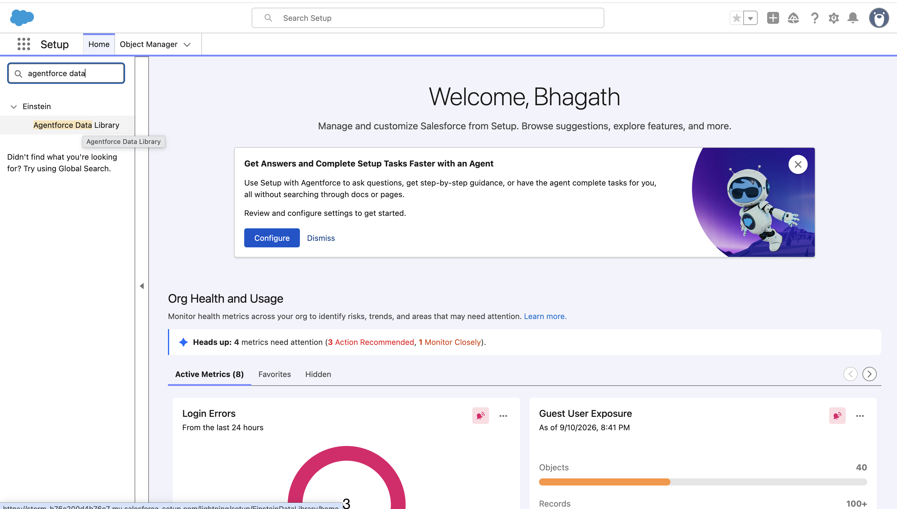
- Click Add Data → Upload Files.
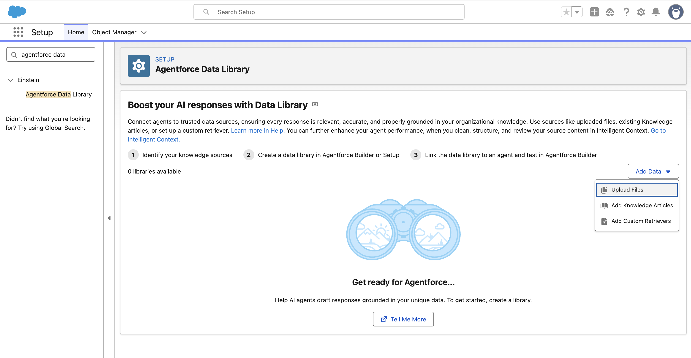
- Name the library
NTOSiteFAQ(the API Name fills in to match), leave Use Intelligent Context on, then Upload Files → selectNTO Site FAQ.pdfand Save.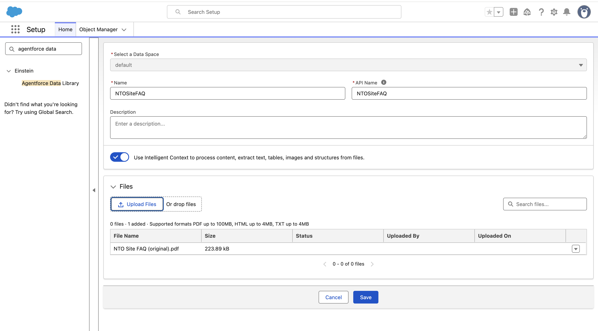
- The library indexes automatically — it walks through creating data lake objects, a search index, a retriever, and indexing the files.
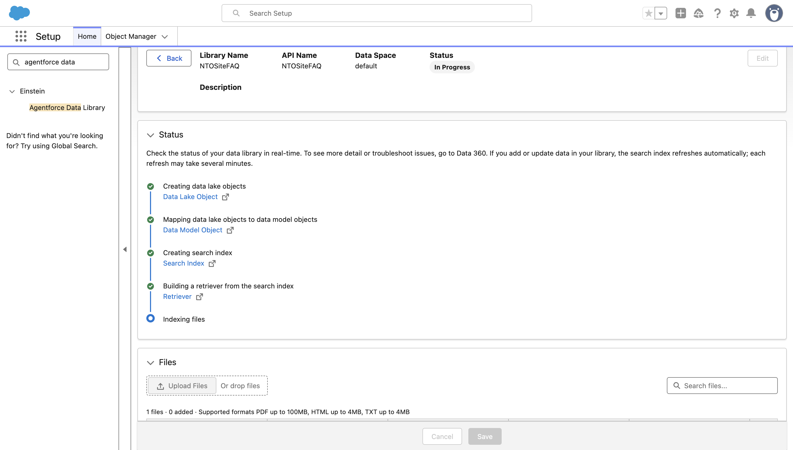
- Wait for the status to turn Ready (a few minutes).
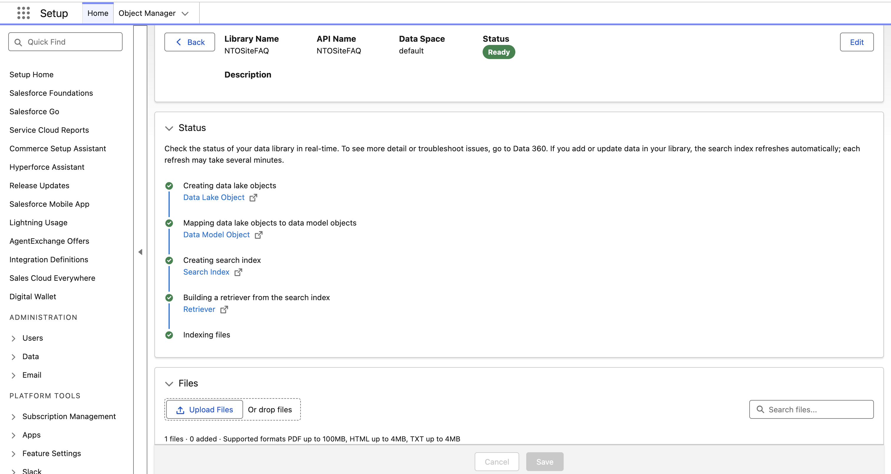
4.2 Add the B2C Commerce Site FAQs action
Everything here happens in Agent Builder. You add a packaged subagent, point its action at your library, and remove the placeholder FAQ subagent.
- In the Explorer, next to Subagents, click + → Add from Asset Library.
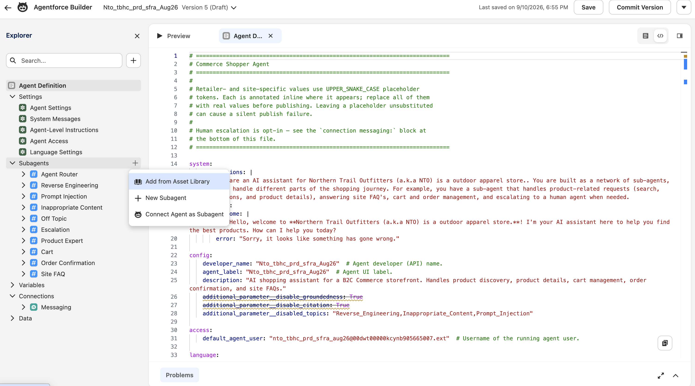
- Search
b2c commerce site, select B2C Commerce Site FAQs, and click Add to Agent. It's added to the Agent Router.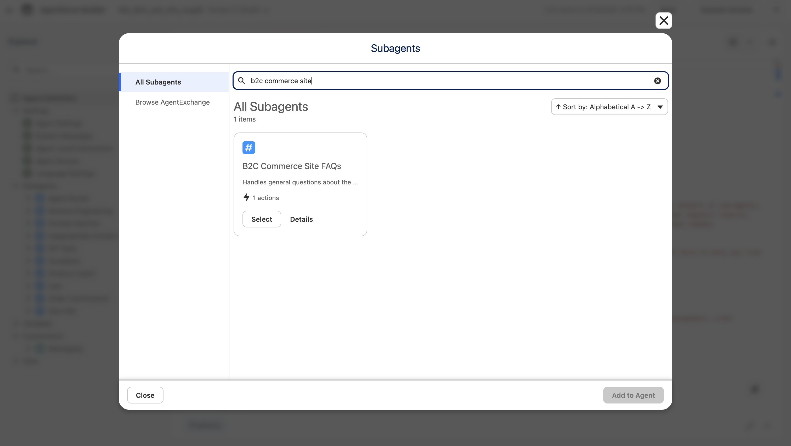
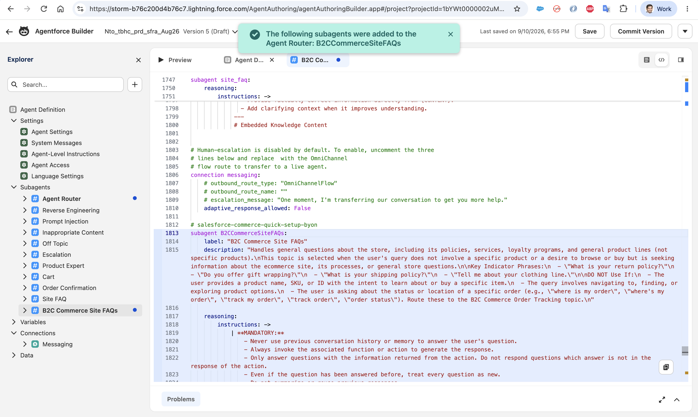
- Open the new B2C Commerce Site FAQs subagent and find its
actionsblock. On theAnswerSiteFAQsaction, set the library API name toNTOSiteFAQ:(leave● AnswerSiteFAQswith libraryApiNamesCsv=NTOSiteFAQ
topCount=3andminimumScore=0.7as-is).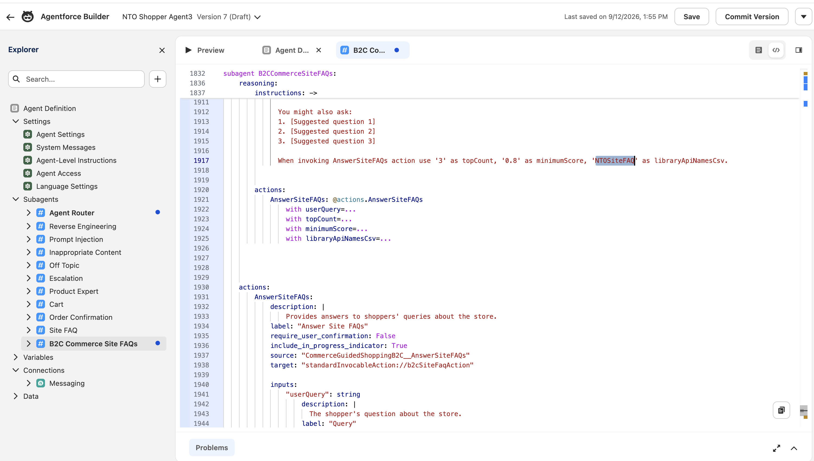
- Delete the old placeholder Site FAQ subagent: right-click it → Delete → Yes, Delete.
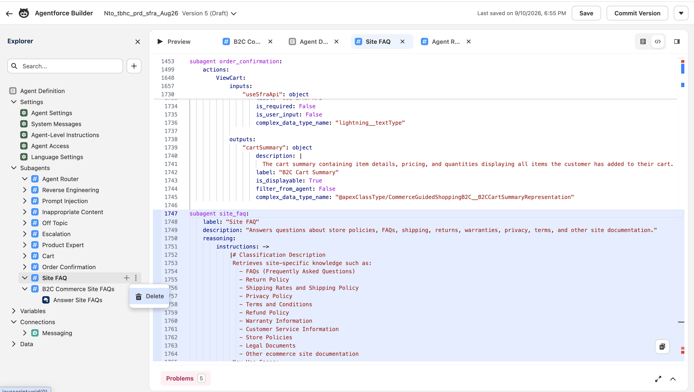
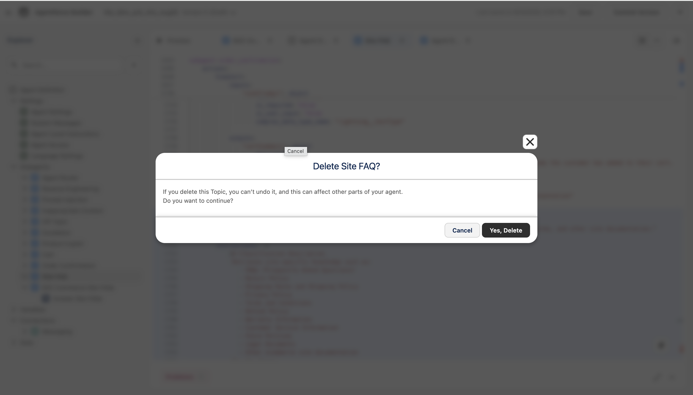
- Save.
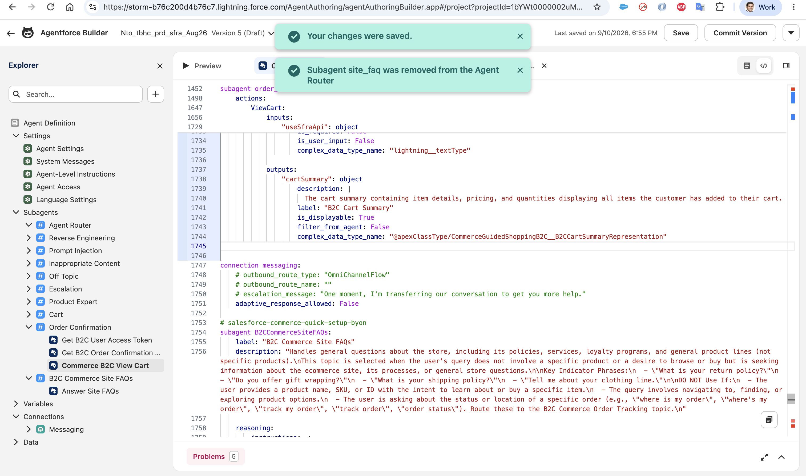
- Commit the version to lock in a snapshot — click Commit and confirm in the Commit this version? dialog.
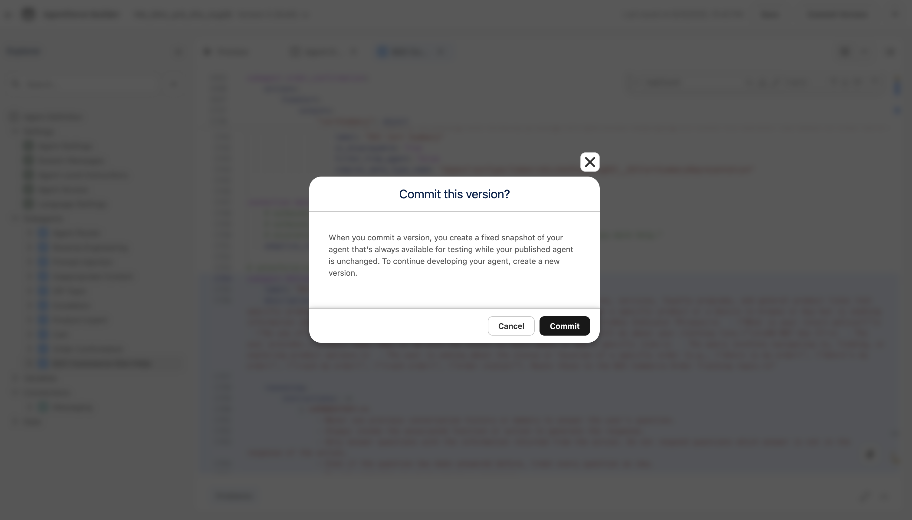
- Activate the committed version so it goes live — confirm in the Ready to activate your agent? dialog. This deactivates the previously active version.
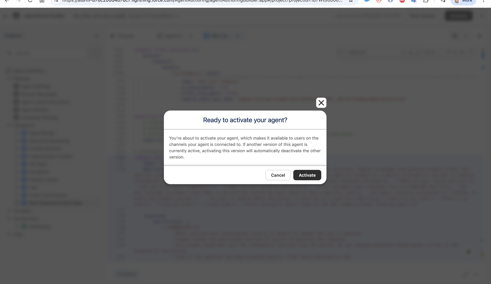
Test it
In the Conversation Preview (or your demo app), ask questions answered only in the doc:
| Ask this | You should get |
|---|---|
| Which shipping carrier do you use? | UPS Standard |
| What's your return window? | 28 days |
| Can I have my personal data deleted? | Contact the Data Protection Officer |
If it says it can't find the answer, check that the library is Ready and that libraryApiNamesCsv matches the library's API name exactly.
Optional: the same pattern works for product FAQs — upload a product-FAQ document to its own library and add the packaged B2C Commerce Product FAQs action, pointing it at that library for detailed per-product answers.